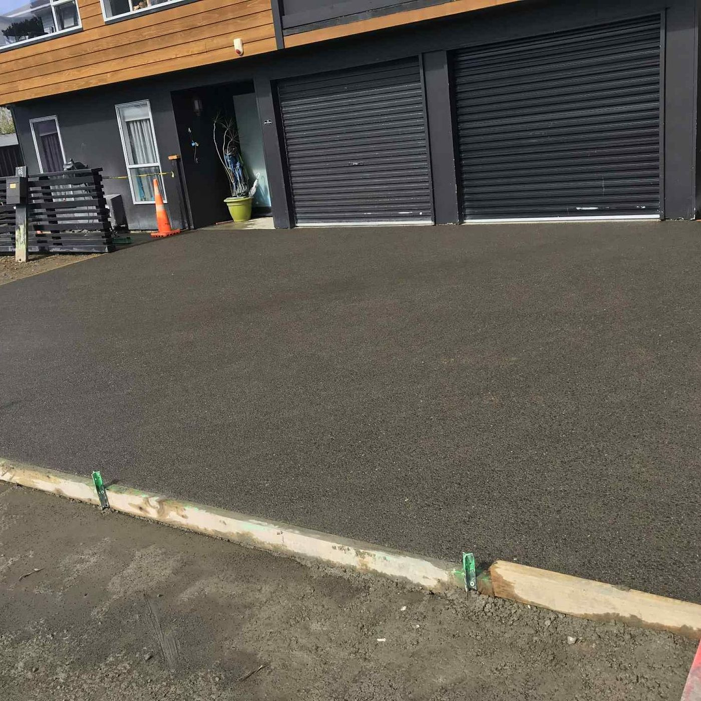
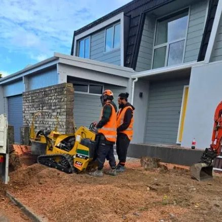
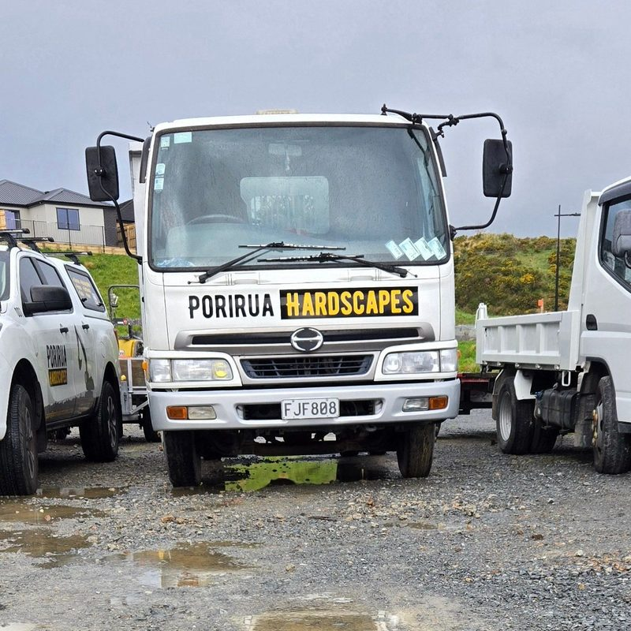

Supplied & supported by
 AM Hire
AM Hire
 RGS Reeve Gunite Services
RGS Reeve Gunite Services
 TOA ITM
TOA ITM
 OTS
OTS
 HireWays
HireWays
AM HireRGS Reeve Gunite ServicesTOA ITMOTSHireWaysPorirua Hardscapes is a locally owned concrete, retaining and excavation crew led by Adam, with 36+ years in the trade. One team quotes it, digs it, forms it and pours it. No sub-contractor roulette.

Photo · Exposed aggregate driveway, WhitbyAM HireRGS Reeve Gunite ServicesTOA ITMOTSHireWaysMost outdoor jobs need a digger before the concrete and a wall before the deck. We own the gear and do the lot, so you deal with one person and one price.
 Photo · Concrete driveway
Photo · Concrete drivewayPlain, broom, coloured and exposed aggregate driveways, patios, paths, slabs and foundations. 100 mm minimum, 20 MPa, steel mesh.
Driveways & concrete Photo · Retaining wall
Photo · Retaining wallTimber, concrete and block walls built to hold Wellington hillsides, with proper drainage behind every one. We'll tell you straight if it needs an engineer.
Retaining walls Photo · Digger & truck
Photo · Digger & truckDigger and tip truck with an experienced operator. Site prep, trenching, levelling, section clearing and cartage of soil, gravel and demolition waste.
Excavation & trucks Photo · Deck & fence
Photo · Deck & fenceTimber decks, balustrades, boundary fences, privacy screens and gates. Built square, built level, built to outlast the weather.
Decks & fences Photo · Landscaping
Photo · LandscapingPaving, edging, lawns, garden beds and planting, plus full section make-overs. Hard landscaping is what we do best, so the bones are right.
Landscape construction Photo · Demolition
Photo · DemolitionHouses, garages, sheds, old slabs and decks. Taken down, carted away, site left clean and ready for whatever comes next.
DemolitionEvery job starts with Adam on site. You get a written quote that says what's included, a start date we keep, and a walk-through before, during and after the work so nothing drifts.
 Photo · The crew on site
Photo · The crew on site
Photo · The crew
Photo · Our gearTell us what you're after and send a couple of photos if you have them. Adam calls back the same day.
We measure, check access, slope and drainage, and talk through finishes. You get an itemised quote, usually within 48 hours.
Our own digger and crew turn up on the agreed date. Old concrete out, base prepared, boxing and steel in, drainage laid.
Concrete poured and finished to the sample you picked. Site cleaned, final walk-through, and care instructions so it lasts.
“Porirua Hardscapes did an amazing job on our driveway. The attention to detail and quality of work are unmatched. Highly recommend them!”
“Adam and the team completely restored my faith in tradesman; they delivered a perfect product under budget.”
“Adam and his team are fantastic! Great communication, and good quality work. Goes over and above to make sure the customer is happy. My concreting and retaining walls look amazing! Definitely recommend.”
Featured in BuildHub's 2026 guide to the best concrete contractors in Wellington.
Indicative Wellington ranges so you can budget before we visit. Access, slope, removing old concrete, drainage and finish are what move the number. Your written quote is fixed.
Plain from $130, exposed aggregate from $160. A typical 40–50 m² driveway lands between $6k and $12k.
H5 posts, H4 rails, drainage coil and scoria. Walls over 1.5 m or carrying a driveway need an engineer and consent.
Minimum charges and cartage apply. Tip fees for cleanfill or demolition waste are passed through at cost.
Ranges are indicative Wellington-region figures for 2026, GST inclusive, and are not a quote. Every site is different.
Most of our jobs are within 30 minutes of Porirua, but our trucks go wherever the work is: Wellington City, both Hutt valleys and the Kāpiti Coast.
Not if the wall retains 1.5 m of ground or less and has nothing loading it from above (no driveway, building, pool or steep bank behind it). Anything taller, or carrying a load, needs consent and usually an engineer. We tell you which camp you're in at the site visit.
Walk on it after 24 to 48 hours. Keep cars off for at least 7 days, longer for heavy vehicles. Concrete reaches full design strength at around 28 days.
Yes. We break out and cart away old concrete, asphalt or pavers with our own digger and truck, then prepare the base. It's itemised on your quote so you can see exactly what it costs.
Exposed aggregate costs a little more per square metre but grips better in the wet, hides tyre marks and stains, and looks sharper for longer. We bring samples to the site visit so you can see the stone and colour options on your own property.
Quotes within 48 hours of the visit. Start dates depend on the season and the size of the job; smaller jobs often slot in within a couple of weeks. Ask Adam for the current lead time when you call.
Call Adam, or send a few details and photos and we'll call you back today.